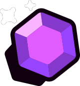
Arraffagemme

Fortino delle gemme è una mappa di Arraffagemme dove si tende ad usare brawler control o a medio raggio, come Doug, Bo ed Emz. prendere il centro il prima possibile è fondamentale
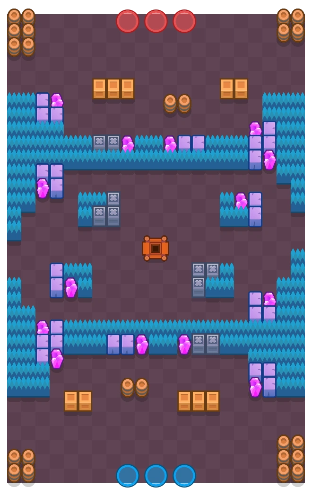
Miniera Rocciadura è una mappa che premia i brawler a lungo raggio o Damage Dealer da Cespuglio come Doug, Stecca, Bibi, R-T e Frank. la tattica è controllare il centro con 2 Brawler ed entrare nelle retrovie avverarie con il 3 Brawler.
.webp)
in Arco Doppio possono essere usati brawler opposti, come Ambra e Rosa che danno fastidio a chi sta negli cespugli, sia brawler che vengono avvantaggi dai cespugli come Doug e Cordelius.
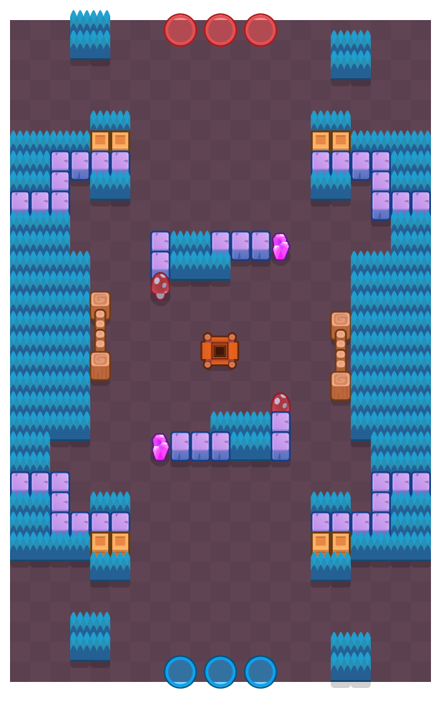
Miniera Minacciosa fatta per brawler principalmente a lungo raggio. per vincere basta avere brawler che scacciano dai cespugli e colpiscono da più lontano di quelli degli avversari.
KO

Nuovi Orizzonti, essendo una mappa di KO, va giocata con brawler che fanno principalmente solo danno e assicurato. Squeak, Najia, Star Nova e Gus sono consigliati, bastera spingere gli avversari alla loro base.
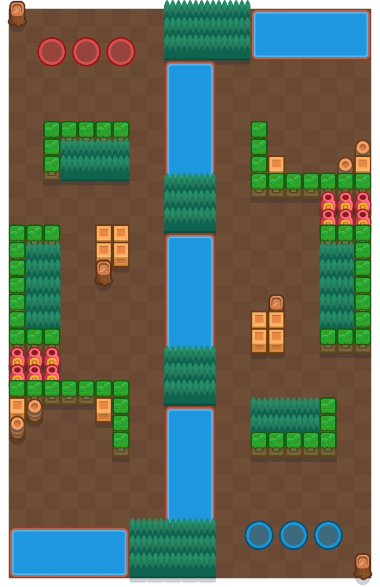
In sorgente di confine non c'è una vera e propria strategia. Brawler che fanno danno come Angelo e giocare al meglio possibile.
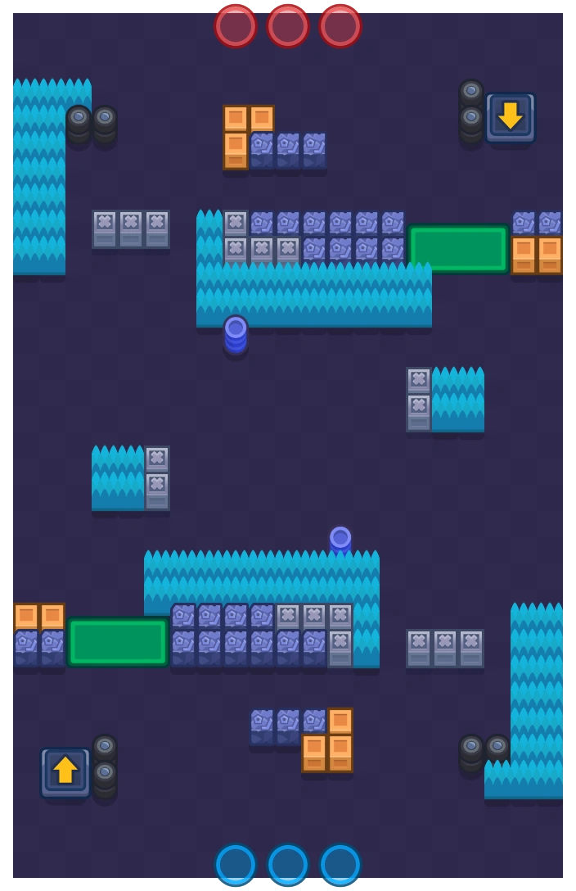
Alla luce del sole è una mappa principalmente giocata con brawler che assaltano, ad esempio Bonnie, Star Nova e Mico. Brock è consigliato per spaccare i muri.
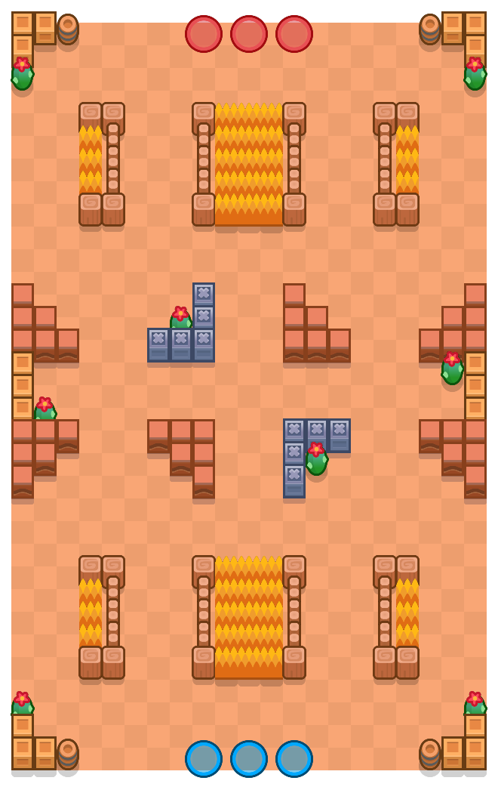
Rupe di Belle è una mappa davvero particolare e strategica: di solito qui si perde al draft. servono brawler molto difensivi e thrower.
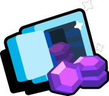
Rapina
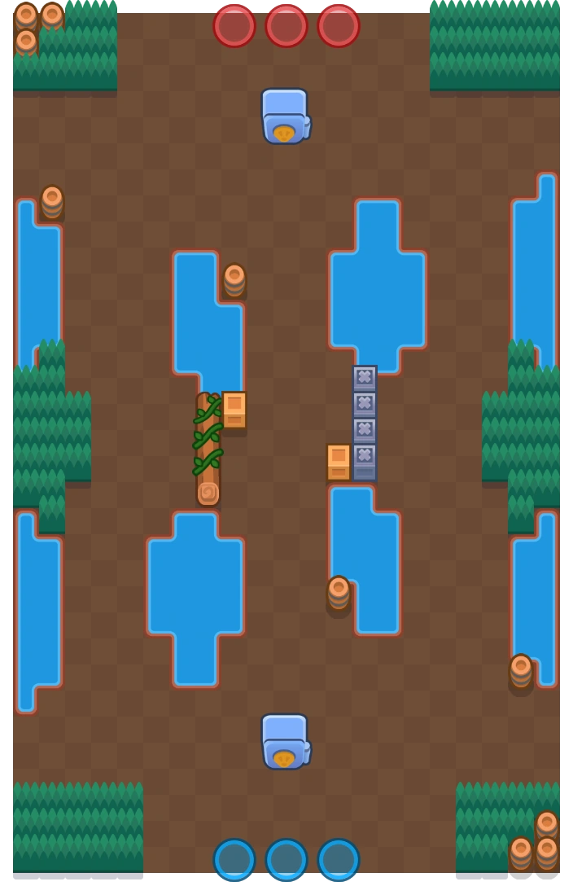
PONTE
in tutte le mappe di Rapina la Strategia è la stessa quindi le altre 2 mappe verranno lasciate vuote. usare Chuck se si è primi e bannarlo se si è secondi. se Chuck è bannato dovrà essere sostituito con brawler offensivi come Melodie, Stecca e Colette. se per qualche disgrazia Chuck è nelle mani degli avversari, Cordelius è l'unica possibilità per counterarlo.
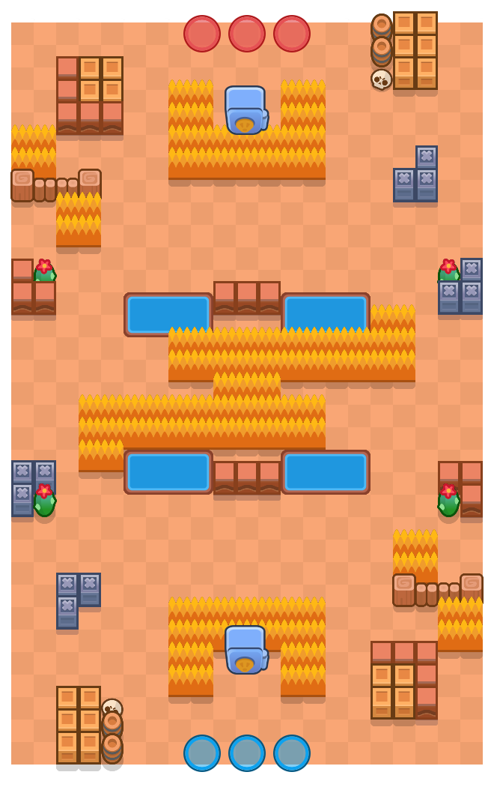
CANYON BUM BUM
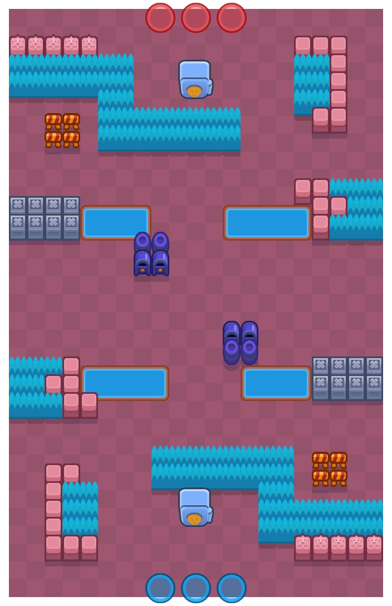
SANTUARIO
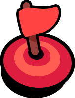
Dominio
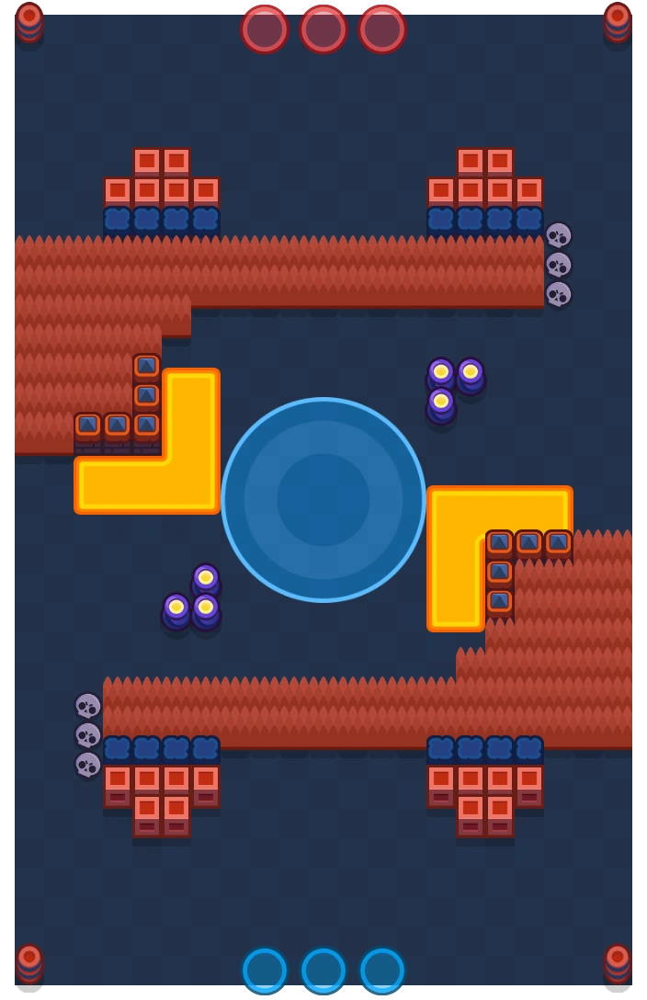
In ring di Fuoco bisogna mandare indietro ogni brawler nemico ed infiltrarsi nel cespuglio a sinistra. Bibi, Meg, Emz, Mortis, Tick, Damian e Lou sono i migliori in questo.

La mia strategia vincente in Campo Aperto è quella di far usare 2 brawler a medio o lungo raggio come Bo, Emz e Piper ai tuoi alleati ed usare un damage dealer a corto raggio, come Doug.

non c'è una Strategia in Distesa degli scarafaggi. basta usare per bene le abilita di brawler come Gelindo, Emz, Kenji, Fang, Lou, Frank, Larry e Lawrie, Bombardino, Tick, Mortis o Kit.
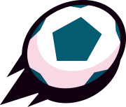
FootBrawl
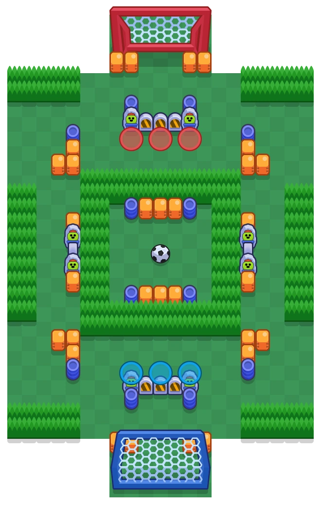
Stamford Brawl è una mappa dove vanno molto utilizzati i cespugli. per iniziare si sceglie un Brawler almeno 1 Brawler a corto raggio ed 1 a lungo Raggio e si fa andare uno a sinistra e uno a destra, mentre il terzo rimane in difesa

In Brawl Trafford vanno usati Brawler che attaccano attraverso i muri o li spaccano. dopo aver controllato la mappa, si controllera la partita.
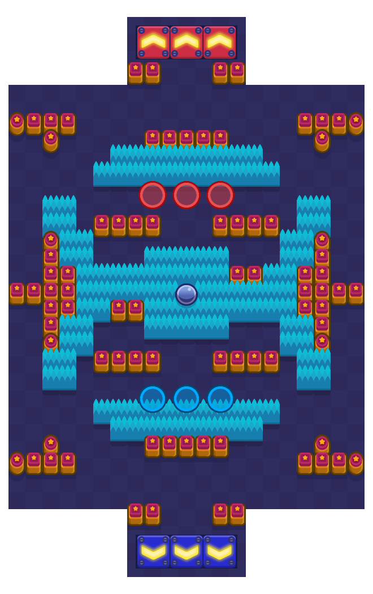
nel Campetto Incolto vanno molto brawler a corto raggio ed è consiglito metterne uno prendere provvedimenti difensivi: Doug, Shelly, Bull, Bibi, Fang e Damian.

in Brawlcanã importa solo chi spacca i muri. che sia Brock o Frank, sono tutti consigliati.